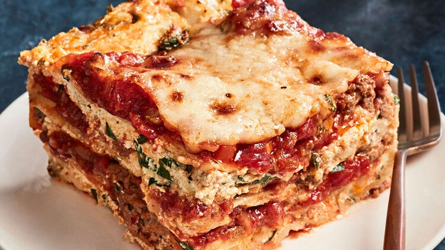

Home Page
World's Best Lasagna recipe
Chicken Lasagna recipe
Classic Lasagna Recipe
There are many lasagna recipes on the web, but here are some of the most popular ones:

Below is an example of the recipe
Classic Lasagna:
It takes about 2 hours to make and serves 6 people.
Steps
Follow these steps to prepare classic lasagna:
- Preheat oven to 180°C/350°F and lightly grease a 13x9 inch baking dish,
- In a small bowl, combine ricotta cheese with egg and parsley,
- Bake for 25 to 30 minutes or until bubbly and golden on top. Let stand for 10 minutes before serving.
Home Page
World's Best Lasagna recipe
Chicken Lasagna recipe